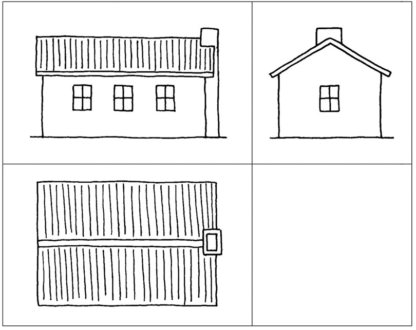
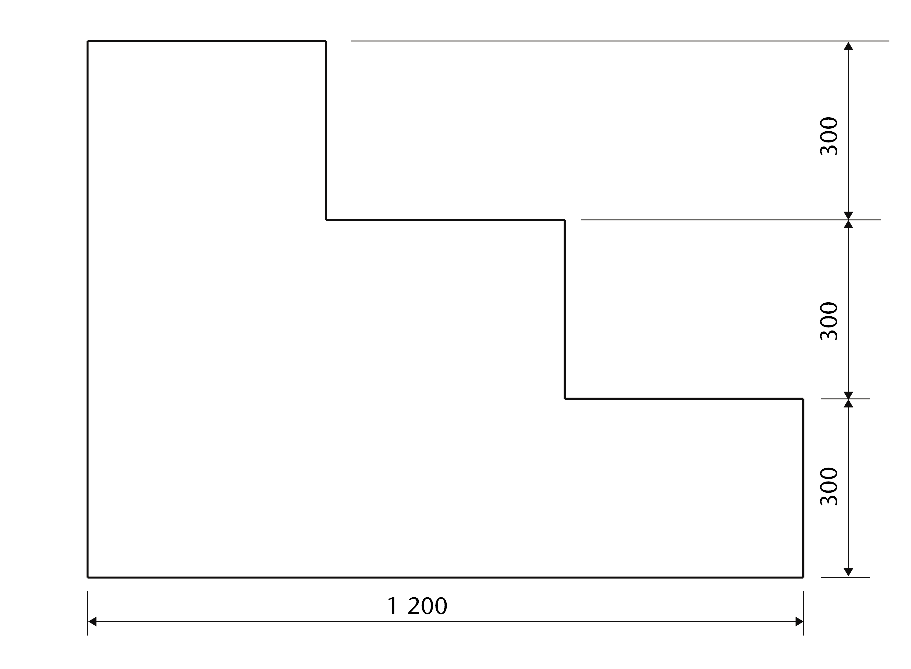
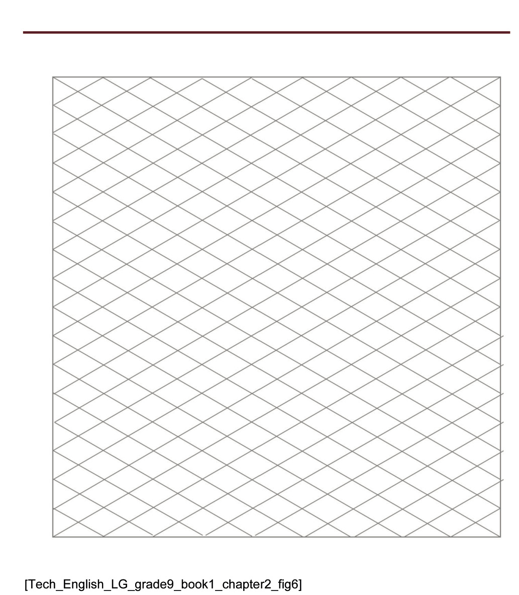
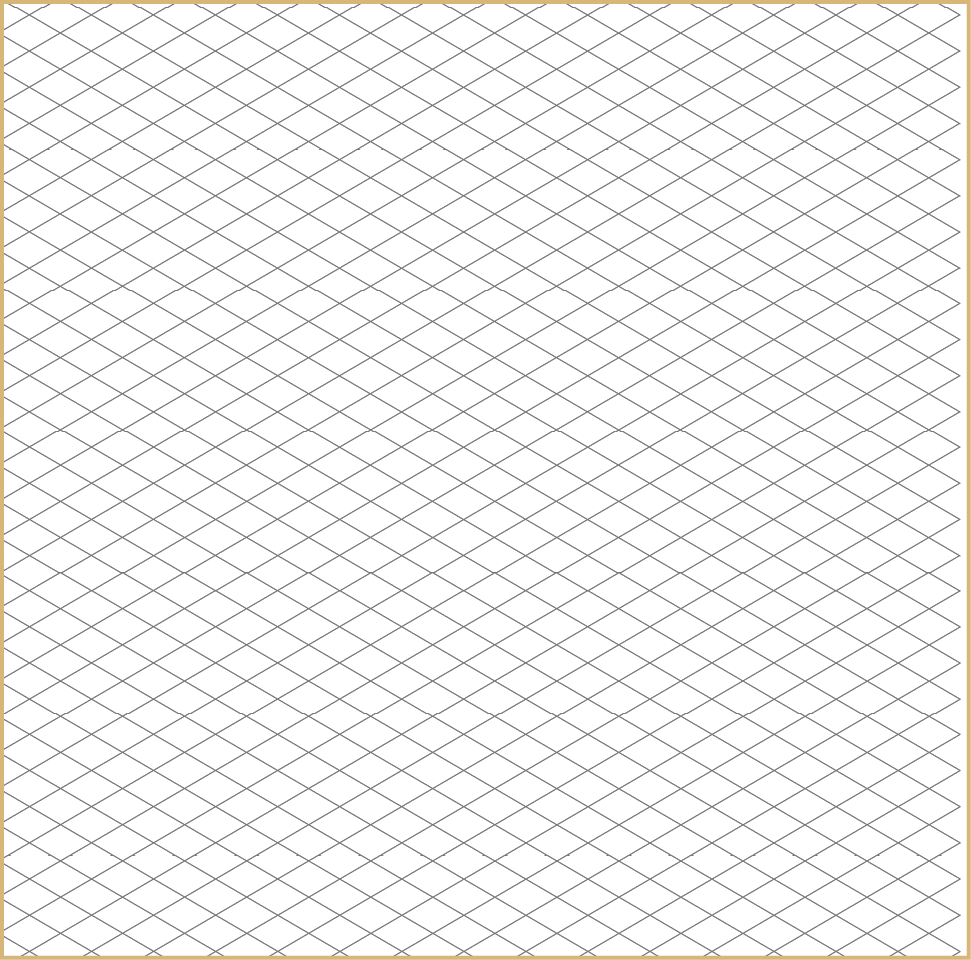
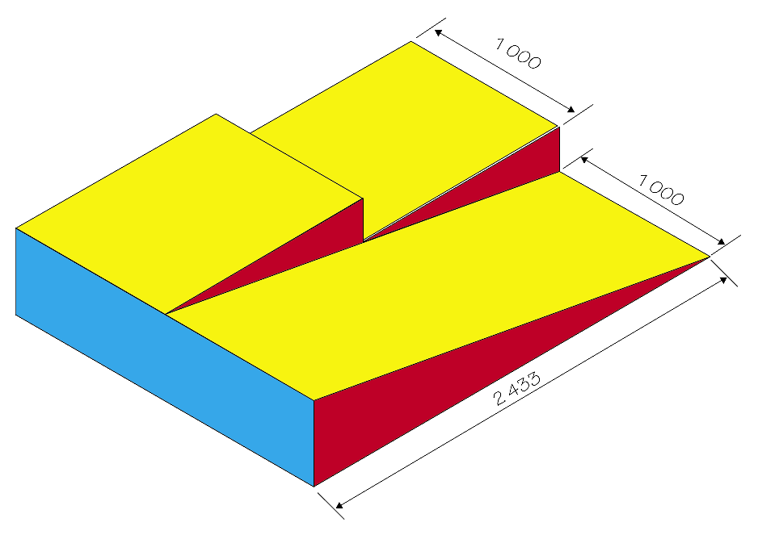
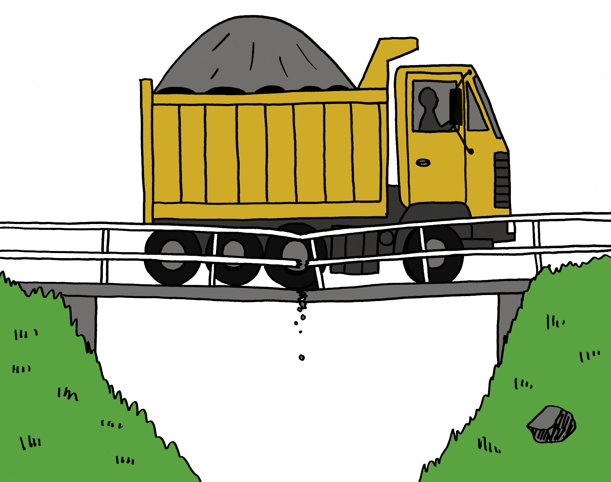
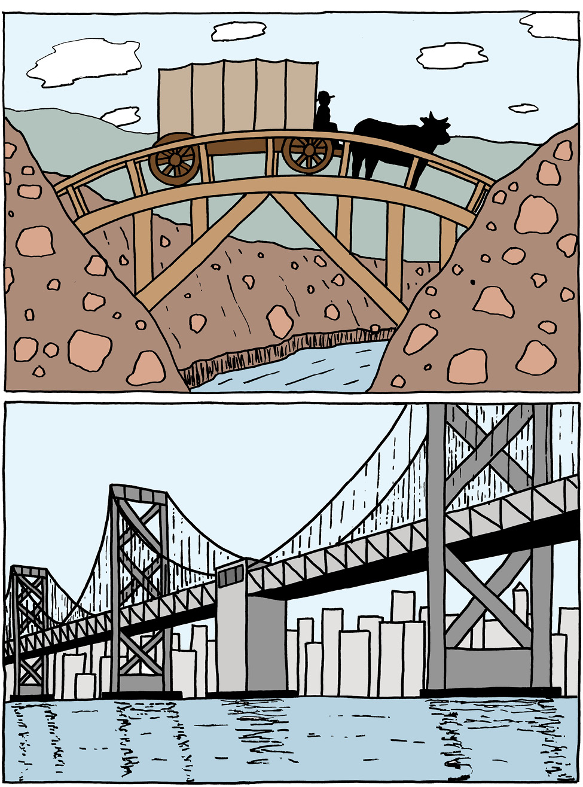
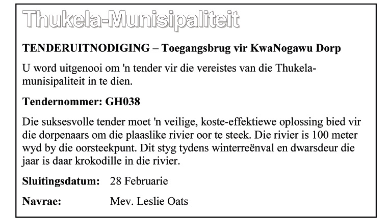
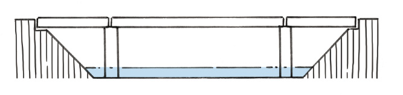
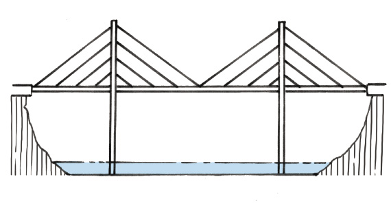

In hierdie hoofstuk gaan jy leer omtekeninge te maak wat die presiese groottes van dele van voorwerpe wys. Dié soort tekening wys ook hoe voorwerpe vanuit verskillende waarnemingspunte lyk.
1.1 Oor ortografiese tekeninge 4
1.2 Maak jou eerste ortografiese tekeninge 7

Figuur 1
1.1 Oor ortografiese tekeninge
In grade 7en 8 het julle verskillende maniere geleer om julle ontwerpe te teken. Jy kan jou idees vinnig met sketse op papier vaslê. Die byvoeg van perspektief laat tekeninge meer lewensgetrou lyk. As jy beskaduwing en kleur byvoeg, lyk jou tekeninge nog beter.
Die woord ortografies, is van twee woorde afkomstig. “Orto” beteken om reguit na ’n plat vlak van ’n voorwerp te kyk. “Grafies” beteken ’n tekening.

eenvoudige skets

isometriese skets

beskaduwing en kleur
Jy gaan nou leer hoe om ortografiese tekeninge te maak. Dit beteken dat jy van verskillende kante na ’n voorwerp gaan kyk en afsonderlike tekeninge sal maak van wat jy sien.
Slegs drie aansigte van die boks kan gesien word.
1. Hoeveel vlakke van die kubus word nie op die tekening gewys nie?

Figuur 7
As jy reg van bo af kyk op ’n kubus
wat soos hierdie een ingekleur is, sal
jy ’n blou vierkant sien.

Figuur 8
Dit word die
bo-aansig genoem.

Figuur 9
As jy na die kubus kyk vanaf ’n spesifieke posisie aan die linkerkant, sal jy ’n geel vierkant sien.

Figuur 10
Dit word ’n sy-aansig genoem.

Figuur 11
As jy na die kubus kyk vanuit ’n spesifieke posisie aan die regterkant, sal jy ’n rooi vierkant sien.
Dit word ook ’n sy-aansig genoem.

Figuur 12
Dit kan ook die vooraansig
genoem word.

Figuur 13
Die vooraansig, bo-aansig en een sy-aansig van ’n klein huisie word hieronder gewys. ’n Stel tekeninge soos hierdie word eerstehoekse ortografiese projeksies genoem.

Figuur 14
Eerstehoekse ortografiese projeksies word gewoonlik, soos hieronder gewys, in blokke geteken. Die vooraansig word eers in die boonste linkerkantse blok geteken. Daarna word konstruksielyne vanaf die vooraansig geteken om dit makliker te maak om die bo-aansig en ’n sy-aansig te teken. ’n Sy-aansig kan ook ’n endaansig genoem word.
|
Vooraansig |
Sy-aansig |
|
Bo-aansig |
|
1.2 Maak jou eerste ortografiese tekeninge
Regs word ’n isometriese tekening van ’n mobiele trap gewys. Die trap is 900 mm wyd. Die ander afmetings word op die sy-aansig op die volgende bladsy gewys. ’n Vooraansig van die trap word in die linkerkantse boonste blok hieronder gewys. Gebruik konstruksielyne om ’n bo-aansig en ’n sy-aansig in die linkerkantse onderste blok, en in die regterkantse boonste blok, te teken.

Figuur 16
Argitekte gebruik ortografiese tekeninge van ’n huis om die bouer in te lig hoe groot die vensters, hoe lank die mure en hoe hoog die dak is. Dit word dimensies of afmetings genoem. Ons skryf afmetings gewoonlik in millimeters (mm).
Die klein lyntjies op jou liniaal is 1mm van mekaar af.
Kyk na hierdie sy-aansig van ’n trap. Jy kan die afmetings langs die pyle sien.

Figuur 17: Sy-aansig van die trap met afmetings
Kyk na die tekeninge hieronder en op die volgende bladsy. ’n Argitek het hulle gemaak terwyl hy ’n huis ontwerp het.
Skaal 1:100
Figuur 18: Voorlopige tekeninge

Figuur 19: Finale tekeninge
Verskillende soorte lyne in tekeninge
In die volgende tekening word verskillende soorte lyne gebruik:
hoogte = 820
breedte = 600
diepte = 450
Senter-tot-bokant = 456
Figuur 20
Die volgende lyne word in die tekening hierbo gebruik:
donker, soliede lyne,
fyn soliede lyne,
strepieslyne,
kettinglyne.
Maak op die volgende bladsy ’n vryhandkopie van hierdie tekening en gebruik dieselfde soorte lyne daarin.
|
|

Volgende week
In die volgende hoofstuk gaan jy jou tekenvaardhede verder ontwikkel. Jy gaan verskeie tekeninge van ‘n stel trappe en ‘n oprit maak.
Die werk wat in hierdie hoofstuk gedek word, sluit die maak van akkurate isometriese en ortografiese tekeninge met instrumente in.
2.1 ’n Trap en ’n oprit/afrit 16
2.2 Isometriese tekening 18
2.3 Die plan in ortografiese tekeninge 20
Nelson Mandela Hoërskool in die Oos-Kaap is splinternuut. Dit het ’n baie mooi, nuwe gemeenskapsaal met ’n verhoog. Die leerders gebruik die verhoog vir die opvoer van dramas, vir modeparades, musiekgeleenthede en kooruitvoerings van geestelike musiek. Die argitekte het uitstekende beligting en ’n goeie klankstelsel ontwerp, maar hulle het een baie belangrike ding vergeet, en dit is om vir rolstoeltoegang voorsiening te maak, sodat gestremde mense ook toegang tot die verhoog kan kry.
Die skoolhoof het die Graad 9-tegnologieleerders gevra om ’n mobiele trap en rolstoeloprit/-afrit te ontwerp wat voor die verhoog geplaas kan word.
2.1 ’n Trap en ’n oprit/afrit
Die Hoërskool Nelson Mandela het ’n nuwe gemeenskapsaal. ’n Trap en rolstoeloprit/-afrit word vir die verhoog in die saal benodig. Die skoolhoof het ’n lys van dinge opgestel wat by die ontwerp van die trap en die rolstoeloprit/-afrit in gedagte gehou moet word.
As jy na die prent op die vorige bladsy kyk, sal jy sien wat ’n oprit/afrit is.
Hierdie goed wat onthou moet word, staan bekend as die “spesifikasies”.
Die spesifikasies vir die trap en rolstoeloprit-afrit:
- • Die trap en die oprit/afrit moet ’n eenheid-vorm sodat dit beweeg kan word.
- • Die eenheid moet voor die verhoog inpas, sodat mense op die verhoog kan oploop en rolstoele op en af kan gaan.
- • Die verhoog is 400 mm hoog.
- • Die trap moet breed genoeg wees vir twee persone, omtrent 1 200 mm.
- • Daar moet drie ewe groot treetjies wees.
- • Die plat gedeelte van elke treetjie is 800 mm lank.
- • Die oprit/afrit moet breed genoeg wees vir een rolstoel – 1 000 mm.
- • Die helling van die oprit/afrit moet 2 433 mm lank wees.
- • Die oprit/afrit loop teen ’n helling van 10˚.
- • Die basis van die oprit/afrit moet 2 400 mm lank wees.
- • Die oprit/afrit moet ’n handreling hê om te keer dat die rolstoele afval.
Om jou te help om te dink hoe die trap en oprit/afrit gaan lyk, kan jy ’n paar tekeninge maak.
1. Maak ’n rowwe tekening van hoe jy dink die saamgestelde trap en oprit/afrit moet lyk. Maak jou tekening op ’n skoon papiervel en maak dit groot genoeg om die hele bladsy te vul.
2. Die afmetings word in die spesifikasies hierbo gegee. Skryf die afmetings op die korrekte plekke op jou tekening.
Isometriese tekening kan jou help om duideliker te sien hoe die ding wat jy in gedagte het, gaan lyk as dit gebou is. Om ’n isometriese tekening te maak, teken al die vertikale lyne teen 90˚ ten opsigte van die basis, en die horisontale lyne teen 30˚ ten opsigte van die basis. Jy kan isometriese ruitpapier gebruik om jou hiermee te help.
Aktiwiteit vir huiswerk
Kyk na die rooi lyne op die ruitpapier hieronder. Sien jy hoe die vertikale lyn opgaan deur die middel van die diamantvorms, en hoe die horisontale lyn dwars oor die middel van die diamantvorms gaan? Die ander lyne gaan teen 30˚ ten opsigte van die horisontale lyn.
Gebruik nou ’n liniaal en skerp potlood en voltooi die tekening van die kubus hieronder.
vertikale lyn
horisontale lyn
30˚
90˚
30˚
Figuur 3
2.2 Isometriese tekening
In hoofstuk 1 is daar ’n isometriese tekening van ’n trap. Hoe dink jy sal ’n isometriese tekening van die oprit/afrit lyk? Dit sal waarskynlik soos ’n stuk verjaarsdagkoek lyk
 Figuur 4
Figuur 4
1. In hoofstuk 1 is daar ’n isometriese tekening van ’n trap. Hoe dink jy sal ’n isometriese tekening van die oprit/afrit lyk? Dit sal waarskynlik soos ’n stuk verjaarsdagkoek lyk.
2. Maak daarna ’n beter skets op die onderste gedeelte van die bladsy.
’n Skets is ’n rowwe tekening wat jou help om vinnig jou idees op papier te sit. Dit maak dit makliker om te dink wat jy besig is om te ontwerp.
Jy hoef nie ’n liniaal en presiese afmetings te gebruik nie.
3. Kyk na die lys spesifikasies aan die begin van paragraaf 2.1 en skryf die volgende op jou tekening:
- • die hoogte van die oprit/afrit op jou tekening
- • die lengte van die helling gedeelte van die oprit-afrit
met ander woorde die afstand van A na B op die
tekening hier regs - • die lengte van die basis
- • die breedte van die oprit/afrit
- • die 10˚-hoek
Figuur 5

A
B
lengte van basis


2.3 Die plan in ortografiese tekeninge
Maak ’n skets van die trap op die isometriese ruitpatroon hieronder. Onthou, dit het net twee treetjies. Kyk na die lys spesifikasies en skryf die volgende op jou tekening:
- • die wydte van die trap,
- • die hoogte van die mobiele trap,
- • die hoogte van elke treetjie, en
- • die lengte van die horisontale gedeelte van elke treetjie.
Huiswerk
1. Jy het reeds ’n tekening van die trap en ’n tekening van die rolstoeloprit/-afrit. Skets hulle nou tesame as een struktuur op die isometriese ruitpatroon hieronder.

2. Lyk dit of jou trap/oprit/afrit gaan werk? Voldoen dit aan al die skoolhoof se spesifikasies?
3. As jy nie met jou tekening tevrede is nie, is dit nou die tyd om veranderinge aan te bring en dit oor te doen, want dit gaan deur jou onderwyser geassesseer word.
Maak ortografiese tekeninge van jou ontwerp
’n Ander leerder het die oprit/afrit en trappe hieronder ontwerp, maar hierdie leerder het nie die spesifikasies op bladsy 16 deeglik gevolg nie.

Figuur 6: Is hierdie ontwerp korrek volgens die spesifikasies op bladsy 16?
1. Vergelyk die tekening hierbo met die spesifikasies van die oprit/afrit wat aan die begin van die hoofstuk gegee word. Skryf aantekeninge hieronder om enige spesifikasies wat nie nagekom is nie aan te dui.
2. Teken op die volgende bladsy ’n eerstehoekse ortografiese projeksie van jou eie ontwerp van die trap met oprit/afrit in ooreenstemming met die spesifikasies wat aan die begin van hierdie hoofstuk gegee word. Let daarop dat die spesifikasies drie stappe vereis. Teken die bo-aansig, ’n sy-aansig van die kant van die oprit/afrit af, en ’n vooraansig soos wat ’n persoon wat die trappe nader om met hulle op te klim, die trap of die oprit/afrit sal sien. Maak al die tekeninge in ooreenstemming met die presiese afmetings, maar onthou dat as jy dit volgens die werklike grootte teken, dit nie op die papier sal inpas nie. Dink dus aan ’n skaal wat op hierdie werkboekpapier sal inpas. Merk die werklike afmetings op al die sye af. Jy hoef nie die handreëling te teken nie.
Maak op die volgende bladsy in hierdie boek drie ortografiese tekeninge van jou ontwerp van die trap en oprit/afrit.
Teken: die bo-aansig, ’n sy-aansig, en ’n entaansig.


Die volgende hoofstuk
Terwyl julle deur die volgende hoofstuk werk, gaan jy meer leer oor verskillende kragte wat die goed wat ons bou, kan beskadig. Jy gaan ook leer hoe materiale sterker gemaak kan word, sodat hulle die kragte wat op hulle inwerk, kan weerstaan.

In hierdie hoofstuk gaan jy leer oor kragte wat op strukture inwerk en hulle kan laat swig (faal), oor hoe om strukture te versterk, en oor die verskillende materiale wat in strukture gebruik word.
3.1 Kragte werk op verskillende plekke in 28
3.2 Kragte werk op verskillende maniere in 32
3.3 Verskillende materiale vir verskillende doeleindes 38

Figuur 1: Hierdie brug kan nie die kragte wat op hom inwerk, weerstaan nie.

Figuur 2: As ’n huis nie sterk genoeg is nie, kan die wind dit uitmekaar waai.

Figuur 3: Dakplate word in verskillende vorme verskaf.
3.1 Kragte werk op verskillende plekke in
Identifiseer en analiseer kragte
Die gewig van die seun druk na onder op die stoel, soos wat deur die pyl gewys word. As een voorwerp teen ’n ander voorwerk druk, sê ons dat daar ’n krag “uitgeoefen” word op die voorwerp. In hierdie geval kan gesê word dat die seun ’n afwaartse krag op die stoel uitoefen, of dat daar ’n afwaartse las op die stoel is.
Figuur 4: Die seun sit stil op die stoel.


 Figuur 5: ’n Man loop op die dak. Figuur 6: ’n Sonverwarmingstelsel op ’n dak
Figuur 5: ’n Man loop op die dak. Figuur 6: ’n Sonverwarmingstelsel op ’n dak
2. (a) Is die las op die dak in figuur 5 die hele tyd op dieselfde plek?
Waarom sê jy so?
(b) Is die las op die dak in figuur 6 die hele tyd op dieselfde plek? Waarom sê jy so?
(c) Is die las op die brug in figuur 7 altyd op dieselfde plek? Waarom sê jy so?

Figuur 7: Voertuie gaan oor ’n brug.
|
Solank iemand stil op ’n stoel bly sit, bly die las op die stoel op dieselfde plek. Dit word ’n vaste of ’n statiese krag genoem. |
3. In die prent hierbo oefen die motor en die vragmotor elk ’n krag op die brug uit. Kan die krag wat in elke geval uitgeoefen word ’n statiese krag genoem word? Verduidelik waarom jy so sê.
|
Wanneer ’n bewegende voorwerp ’n krag op ’n ander voorwerp uitoefen, dan sê mens die krag is dinamies. |
4. In elk van die volgende gevalle, sê of die krag wat op die tafel uitgeoefen word staties of dinamies is. Verduidelik in elke geval jou antwoord.
(a) ’n Pot met blomme wat op die tafel staan.
(b) ’n Kat wat op die tafel loop.
(c) ’n Seun wat ’n sokkerbal oor die tafel rol.
(d) ’n Man wat die tafel skrop.
5. Wat is die verskil tussen die lasse wat op die twee tafels hieronder uitgeoefen word?


Figuur 8: Verskillende maniere om potte op ’n tafel te pak.
Kyk na die verskillende maniere waarop die twee vragmotors hieronder gelaai is. Op die een vragmotor vorm die dromme ’n las orals oor die hele laaibak van die vragmotor. Op die ander vragmotor is die hele las een groot drom. Die enkele drom oefen ’n krag op slegs een klein gedeelte van die laaibak uit.


Figuur 9: Verskillende soorte vragte op twee vragmotors.
|
’n Las wat ’n gelyke krag uitoefen oor die hele struktuur wat dit ondersteun, word ’n eweredig verspreide las genoem. ’n Las wat ’n krag uitoefen op een gedeelte van die struktuur wat dit ondersteun, word ’n oneweredig verspreide las genoem. |
6. Dink aan ’n huis met ’n sinkplaatdak en die kragte wat die sinkplate op die dakstruktuur uitoefen.
(a) Is die las eweredig of oneweredig versprei? Waarom sê jy so?
(b) Is die las staties of dinamies? Waarom sê jy so?
7. Dink aan mense wat met ’n houttrap op en af loop.
(a) Is die las eweredig of oneweredig versprei? Waarom sê jy so?
(b) Is die las staties of dinamies? Waarom sê jy so?
8. Jy moet twee houttafels ontwerp en jy is versoek om so min hout as moontlik te gebruik. In die geval van die een tafel, sê die ontwerpopdrag dat die las op die tafel altyd staties en eweredig versprei sal wees. In die geval van die tweede tafel, sê die ontwerpopdrag dat dit dieselfde las as die eerste tafel sal dra, maar dat die las soms dinamies en ook oneweredig versprei sal wees. Beskryf hoe jou ontwerpe vir die twee tafels van mekaar sal verskil en verduidelik waarom.
3.2 Kragte werk op verskillende maniere in
Kragte kan op die volgende maniere op strukture en dele van strukture inwerk:
|
|
Die verskillende stukke van ’n raamstruktuur word seksies of elemente of dele van die struktuur genoem.

Figuur 10: ’n Raamstruktuur wat van planke gemaak is.
Kragte kan stoot, trek en verdraai
Gebruik gebruikte skryfpapiervelle en rol ses buise daarmee. Plak hulle met gom of kleefband vas om te keer dat hulle afrol.
 Figuur 11
Figuur 11
1. Plaas jou hande aan beide eindpunte van ’n buis en druk hulle na mekaar toe. As jy dit doen, oefen jy “drukkrag” op die buis uit.
2. Gryp ’n buis aan elkeen van sy eindpunte en probeer om dit uitmekaar te trek. As jy dit doen, oefen jy “trekkrag” op die buis uit. Jy plaas die buis onder spanning.
3. Plaas die eindpunte van ’n buis op twee boeke en druk afwaarts in die middel van die buis. Wat gebeur en watter soort krag het jy op die buis toegepas?
4. Neem ’n buis by sy twee punte en draai dit soos in hierdie prent gewys word.As jy dit doen, pas jy “wringkrag” toe.

Figuur 12
5. Maak twee buise aan mekaar vas deur ’n vuurhoutjie of klein stokkie daardeur te druk, soos hieronder gewys word.
 Figuur 13
Figuur 13
As jy die twee papierbuise van mekaar wegtrek, pas jy “skuifkrag” op die stokkie toe.

Vind krag in vorm
1. Vou ’n gebruikte A4-papiervel oor
sy lengte in twee helftes.

Figuur 14
Vou dit weer:

Figuur 15
Vou dit ’n derde keer, sodat jy ’n plat
strook het wat agt lae dik is.
Maak nog twee gevoude stroke soos hierdie een.

Figuur 16
2. Plaas die gevoude strook oor die rand van jou skoolbank soos hieronder gewys word. Druk dit met een hand op die bank vas en druk liggies met die ander hand op die oorhangende stuk van die strook om dit na onder te laat buig.
 Figuur 17
Figuur 17
3. Vou nou jou papierstrook weer halfpad oop en vou dit weer, sodat jy ’n driehoekige buis kry, soos hieronder gewys word.
Vou eers so: Vou dan so:

Figuur 18

Figuur 19
om hierdie driehoekige buis te maak:

Figuur 20
4. (a) Plaas die driehoekige buis oor die kant van jou lessenaar soos wat jy met die
plat strook in vraag 2 gedoen het. Druk dit met een hand op die
lessenaarblad vas en druk dan liggies na onder met die ander hand
op die verste deel om dit te laat afbuig.
(b) Wat was die maklikste om te buig, die plat strook of die driehoekige buis?
Figuur 21: Dwarssnitte
Die vorm wat jy sien as jy reguit na een punt van ’n deel van ’n struktuur kyk, word ’n “dwarssnit” of ’n “profiel” genoem.
5. Maak vryhandsketse van die dwarssnitte van ’n ronde, ’n vierkantige en ’n driehoekige buis in die spasie hieronder.
|
|
6. Maak jou driehoekige buis oop en vou dit weer om ’n buis met ’n T-profiel, soos hier regs vertoon, te maak.

Figuur 23

Figuur 22
7. Laat jou T-vormige “balk” soos hier regs gewys, regop op jou skoolbank staan en druk liggies van die bo-punt na onder. Moenie dit nou buig nie.
Neem een van die plat stroke wat jy vir vraag 1 gemaak het. Hou dit regop en druk dit na onder soos jy met die T-vormige balk gemaak het.
Watter een van die twee stroke is die sterkste as jy afwaartse druk op die punt daarvan toepas, die plat strook of die T-vormige balk? Verduidelik waarom.
|
’n T-vormige balk weerstaan drukkrag beter as ’n plat strook wat ewe lank is en van dieselfde hoeveelheid materiaal (papier) gemaak is. |
Figuur 24

8. Vergelyk die drukweerstandigheid van verskillende balke en buise, elk gemaak van een vel A4-papier, met die volgende deursnit-vorms of profiele: T-vorm; vierkantvorm en ronde vorm. Verduidelik jou antwoorde.

Figuur 25: Metaal balke
|
Metaalbalke wat gebruik word om raamstrukture te bou, word in ’n verskeidenheid profiele vervaardig. ’n Klompie gewilde profiele word hieronder gewys.
H-profiel. Hierdie profiele word dikwels gebruik as regop stutte of pilare, byvoorbeeld in geboue. Dit weerstaan druk baie goed en buig nie maklik nie. |
|
I-profiel. Hierdie profiel word vir spoorstawe gebruik. Die breë basis verskaf stabiliteit. |
|
|
U-profiel. Hierdie profiel is ligter as die H-profiel. Dit word dikwels gebruik om horisontale ondersteuning te gee, byvoorbeeld in rakke. Die onderstel van ’n vragmotor word normaalweg met U-balke gemaak. |
|
|
Hierdie profiel word ’n hoekyster genoem, selfs al is dit van ’n ander metaal gemaak. Dit het ’n hoër buigkrag as plat stroke. Dit is lig en word dikwels vir kruisverspanning in kragmaste, torings en ander strukture gebruik. |
|
|
Buisprofiel. Dit is die beste profiel om verwringing te weerstaan. |

Gebruik van interne kruisverspanning om verwringing te voorkom
Stel jou voor jy het met reguit stukkies hout ’n raamstruktuur gemaak.

Figuur 26
Stel jou nou voor jy draai hierdie struktuur inmekaar soos die persoon op die foto die handdoek inmekaardraai.

Figuur 27
Die raamstruktuur mag uiteindelik so lyk:

Figuur 28
Om te voorkom dat die struktuur so opgedraai word, moet jy, soos wat hier gewys word, meer elemente byvoeg.

Figuur 29
Dit word interne kruisverspanning genoem.
3.3 Verskillende materiale vir verskillende doeleindes
Hoe materiale van mekaar kan verskil
1. Wat buig die maklikste, jou potlood of ’n papiervel?
2. Plaas ’n papiervel plat op jou skoolbank se blad neer. Tel dit met beide hande op en buig dit sonder om dit te vou. Plaas dit terug op die bank. Is dit weer plat?
|
Materiaal wat maklik buig, maar maklik na sy oorspronklike vorm terugkeer, as jy dit laat los, word buigsame materiaal genoem. Materiaal wat nie buigsaam is nie, word onbuigsame of stywe materiaal genoem. |
3. (a) Is klei buigbaar of styf?
(b) Is die poot van ’n stoel buigbaar of styf?
(c) Is ’n stuk draad buigbaar of styf?
(d) Is jou skoen buigbaar of styf?
4. Druk jou vinger teen jou skoolbank. Druk nou jou vinger teen jou arm.
Wat is die verskil tussen die druk van jou vinger teen jou bank, en die druk van jou vinger teen jou arm?
5. As jy met jou vinger teen ’n sak sand druk, sal dit dieselfde wees as om teen jou bank of jou arm te druk?
Bakstene word gemaak deur klei te bak totdat dit hard is.
Sommige materiale is hard, en ander materiale is sag.
6. (a) Dink aan ’n baksteen en ’n stuk skuimrubber van dieselfde grootte
(soos die skuimrubber wat in matrasse gebruik word).Watter een van die
twee is die maklikste om op te tel?
(b) Hoeveel stene dink jy kan jy met gemak dra as jy hulle in ’n krat op jou skouer dra?
(c) Hoeveel stukke baksteengrootte skuimrubberstukke dink jy kan jy met gemak dra as jy hulle in ’n krat op jou skouer dra?
’n Baksteen is baie swaarder as ’n stuk skuimrubber met dieselfde grootte.
Een verskil tussen gebakte klei en skuimrubber is, dat as jy twee ewe groot stukke daarvan het, die gebakte klei swaarder as die skuimrubber sal wees. Dit sal meer arbeid vereis om gebakte klei op te tel of te dra.
Die verskil tussen gebakte klei en skuimrubber kan soos volg beskryf word: gebakte klei het ’n hoër digtheid as skuimrubber.
7. (a) Watter materiaal het die hoogste digtheid, hout of rots?
(b) Watter materiaal het die hoogste digtheid, glas of plastiek?
Stukkies metaal wat buite rondlê, lyk soms bruin.Dit word roes of korrosie genoem. Roes word gevorm deur ’n chemiese reaksie tussen die metaal en suurstof in die lug of water. Hout en glas roes nie. Rots wat yster bevat, roes.As jy in die veld stap, sien jy soms stukke rots met presies dieselfde bruin kleur.
Geroeste rots kan verskillende kleure hê, soos die kleure in die gekleurde strook onder aan hierdie bladsy. In die verlede is kleur om verf te maak van geroeste rots verkry.
8. Metaal word gebruik vir die bouwerk aan torings, dakke, motors en vragmotors en soms selfs meubels.Wat kan ’n mens doen om te voorkom dat metaal roes?

|
Iets meer oor metale |
Daar is baie verskillende metale soos koper, yster, aluminium, chroom, goud, platinum en baie ander. Omdat yster so volop is, is dit goedkoper as die meeste ander metale. Yster is ’n maklike metaal om mee te werk omdat dit maklik in verskillende vorms verwerk kan word. Yster word meestal met ‘n bietjie koolstof gemeng om “staal” te vorm, wat baie sterker as suiwer yster is. Ongelukkig roes yster maklik terwyl ander metale nie so maklik, of glad nie, roes nie. Om hierdie rede word yster dikwels met ander metale gemeng, byvoorbeeld chroom, om dit meer bestand teen roes te maak. “Vlekvrye staal” is staal wat baie chroom in het.
Materiale in ’n huis
’n Huis is ’n goeie voorbeeld van ’n struktuur wat met baie verskillende materiale gemaak word. Om ’n huis soos die een hieronder te bou, moet jy bakstene, beton, hout en metaal gebruik.

Figuur 30
1. Verskillende dele van die huis word gelys in die linkerkantse kolom van die tabel hieronder. Skryf in die regterkantse kolom van watter materiaal jy dink die betrokke deel van die huis gemaak is.
|
Deel van die huis |
Materiaal waarvan dit gemaak is |
|
Die mure |
|
|
Die vensterrame |
|
|
Die deur |
|
|
Die dakstruktuur |
|
|
Die dakbedekking |
|
|
Die heining |
|
|
Die plaveisel om die huis |
|
Bouers gebruik bakstene, beton, hout en staal, want elkeen van hierdie materiale is op verskillende maniere bruikbaar. Jy kan sê verskillende materiale het verskillende “eienskappe”.
Beton is hard en sal nie maklik skrape opdoen nie, daarom gebruik bouers dit op huisvloere. Beton is ook ferm, daarom buig dit nie as ons daaroor loop nie. Beton word nie deur water beskadig nie en sal nie roes nie.
Bakstene buig nie en roes nie, daarom word hulle gebruik om mure mee te bou.
Hout, omdat dit buigsaam is, word in ’n huis gebruik vir deure, vensters en dakke. Dit beteken dat as jy die deur hard toeslaan, die hout effens sal meegee maar nie sal breek nie. Hout is ook lig, goedkoop en maklik om mee te werk.
Hout kan deur water en die hitte van die son beskadig word. Wanneer hout nat word, kan dit skeeftrek en vrot. Om hout teen beskadiging te beskerm en dit langer te laat hou, moet dit met ’n laag vernis, spesiale olie of enige ander beskermende materiaal bedek word.
Staal is sterk en hard. Dit is ook buigsaam en nie maklik om met ’n hamer stukkend te slaan nie. Dit word daarom vir sekuriteitshekke gebruik. Staal word egter deur water beskadig, in ’n proses wat roes of korrosie genoem word. Om te voorkom dat staal roes, moet mens dit met ’n spesiale verflaag bedek.
2. Skryf die materiale wat vir die onderskeie dele van die huis gebruik word in die middelkolom hieronder. Skryf daarna die redes waarom jy dink elke materiaal vir daardie spesifieke deel van die huis gebruik word, in regterkantse kolom.
|
Deel van die huis |
Materiaal |
Redes vir keuse van materiaal |
|
Mure
|
|
|
|
Vensterrame
|
|
|
|
Deur
|
|
|
|
Dakstruktuur
|
|
|
|
Dakbedekking
|
|
|
|
Heining
|
|
|
|
Plaveisel om die huis
|
|
|
3. Party huise het teëldakke, ander het sinkdakke. Wat is die voordele en nadele van teëldakke?
|
Voordele van teëldakke |
Nadele van teëldakke |
|
|
|
4. Wat is die voordele en nadele van sinkdakke?
|
Voordele van sinkdakke |
Nadele van sinkdakke |
|
|
|
5. In die ou dae is wawiele van hout gemaak. Vandag gebruik ons rubberbuitebande. Waarom het ons van hout na rubber oorgeskakel?
6. Wanneer bouers ’n ruit in ’n vensterraam sit, druk hulle ’n sagte, klewerige materiaal, wat stopverf genoem word, al om die rande van die ruit. Die stopverf droog uit totdat dit hard is, en verhoed dat die glas uit die raam val. Grondboontjiebotter is ook ’n sagte, klewerige materiaal wat uitdroog in die son totdat dit hard is. Waarom is dit nie ’n goeie idee om grondboontjiebotter te gebruik om ruite in vensterrame te sit nie?

Volgende week
Volgende week begin jy met jou praktiese assesseringstaak. Jy gaan ’n plan maak om ’n probleem vir ’n gemeenskap op te los.
Oor die volgende ses weke gaan julle ’n model van ’n brug ontwerp en bou. Om dit te doen moet julle deur die verskillende stadiums van die ontwerpproses werk en in groepe van drie saamwerk.
Week 1
Ondersoek ouma Margaret Thabang se probleem 46
Week 2
Ontwikkel rowwe sketse van idees 51
Week 3
Maak werkstekeninge 57
Week 4
Bespreek en oefen die maak van jou model 63
Week 5
Ontwerp ’n evalueringsinstrument 65
Week 6
Bied julle tender vir die klas aan 68
Assessering
Ontwerp:
Skets jou idees [10]
Ontwerpopdrag met spesifikasies en beperkings [10]
Maak:
Eerste-hoekse ortografiese tekening [10]
Begroting [10]
Voltooide model [20]
Kommunikeer:
Bied die tender aan [10]
[Puntetotaal: 70]

Figuur 1

Figuur 2
Week 1
Ondersoek ouma Margaret Thabang se probleem (60 minute)
1. Lees in jou eie groep die volgende storie deur.

Figuur 3
Riviere verskaf water wat gemeenskappe so nodig het, maar water kan soms ’n mens se lewe baie moeilik maak. Gedurende die reënseisoen sukkel mense aan beide kante van die rivier byvoorbeeld om die rivier oor te steek as daar nie ’n brug is nie.
Baie van die mense in KwaNongawu langs die uThukelarivier in KwaZulu-Natal werk aan die ander kant van die rivier. Die dokter, banke en winkels wat hulle moet besoek, is ook aan die ander kant van die rivier.
Skoolkinders steek die rivier oor om hulle skole aan die ander kant te bereik en die ouer mense moet een maal per maand deur die rivier loop vir die uitbetaling van hulle regeringstoelae by die kantore aan die ander kant.
Gewoonlik steek die dorpenaars die rivier te voet oor, want die naaste brug is baie ver van hulle af. In die reënseisoen, as die rivier afkom, word dit baie gevaarlik. Die watervlak is so hoog dat dit moeilik is om veilig daardeur te kom, en die dorpsbewoners het ook krokodille in die rivier gesien. Almal is bang om te verdrink of deur ’n krokodil aangeval te word, maar hulle het geen ander keuse nie en moet deur die rivier gaan om die ander kant te bereik.
2. Skryf ’n paar sinne om die dorpenaars se probleem te verduidelik.
3. Kan jy ’n paar maniere voorstel om ouma Margaret Thabang oor die rivier te help?

Figuur 4: Die versoek om ’n tender wat in ’n plaaslike koerant geplaas is.
’n Tender is ’n versoek om werk deur ’n maatskappy. Dit gee besonderhede oor hoeveel die maatskappy gaan vra om die werk te voltooi.
Die Thukela Munisipaliteit het ’n advertensie geplaas om kontrakteurs te versoek om tenders in te dien vir die bou van ’n struktuur om mense te help om veilig oor die rivier by die dorpie, KwaNogawu, veilig oor te steek.
Munisipaliteite word nie toegelaat om ’n kontrakteur te kies sonder om aan soveel kontrakteurs as moontlik die geleentheid te gee om aansoek te doen nie. Dit is om te voorkom dat iemand voorgetrek word, en om korrupsie te voorkom. Elke kontrakteur skryf ’n tenderdokument wat ’n beskrywing is van sy of haar plan vir die werk en ook wys hoeveel hy of sy sal vra om die werk te voltooi. Die werk word gegee aan die kontrakteur wat die beste plan teen die laagste prys voorlê.
Jy gaan ’n struktuur bou om die gemeenskap te help. Lees weer die storie en ondersoek die verskillende brûe hieronder om te besluit wat die beste oplossing vir die probleem sal wees.
Ondersoek strukture om die probleem op te los (60 minute)
Op hierdie en die volgende bladsy is daar tekeninge van verskillende tipes brûe. Julle het in graad 8 oor hierdie brûe geleer. Kan jy onthou wat die name beteken? As jy nie kan onthou nie, kyk na jou graad 8-boek of vra jou onderwyser om jou te help.
 A: ’n Balk-en-kolombrug
 B: ’n Boogbrug
B: ’n Boogbrug
 C: ’n Vakwerkbrug
C: ’n Vakwerkbrug
 D: ’n Hangbrug
D: ’n Hangbrug
 E: ’n Vrydraerbrug
E: ’n Vrydraerbrug
 F: ’n Kabelankerbrug van die harptipe
 G: ’n Kabelankerbrug van die waaiertipe
G: ’n Kabelankerbrug van die waaiertipe

H: ’n Klein hangbrug
Figuur 5
Vir verskillende tipes brûe word verskillende soorte materiale en konstruksiemetodes gebruik, maar hulle het almal ’n soortgelyke funksie.
Bespreek in julle groepe party van die voordele en nadele van elkeen van die brûe vir die gemeenskap. Dink oor watter dele die gemeenskap sal help en watter nie sal help nie.
As die brug vir motors bedoel word, mag dit te duur wees vir julle tender. Onthou dat die brug die gemeenskap se probleem moet oplos, dit wil sê dit moet doelgeskik wees. In hierdie geval beteken dit dat jou brug sterk moet wees en hoog genoeg om mense te dra, maar nie motors nie. Jou brug moet egter sterk genoeg wees om vloede, wat nogal algemeen in KwaZulu-Natal is, te weerstaan. Jou brug moet stabiel wees en nie sywaarts heen en weer beweeg en ou mense of kinders laat val as hulle oor die brug loop nie. Dit moet ook ’n struktuur hê wat ’n breë rivier kan oorspan.
Gebruik die volgende lys om jou te help om elkeen van die brûe in figuur 5 op bladsy 48 en 49, te ondersoek. Bring ook prente van brûe skool toe. Jy kan foto’s van brûe in ou tydskrifte en koerante kry.
|
Kontrolelys vir die ondersoek van brûe |
Ja |
Nee |
|
Is die brug vir motors? |
|
|
|
Is die brug vir mense? |
|
|
|
Is die brug te duur vir die tender? |
|
|
|
Kan die brug sterk genoeg en hoog genoeg gebou word sodat dit nie deur vloede meegesleur sal word nie? |
|
|
|
Kan die brug stabiel gebou word sodat dit nie sywaarts beweeg nie? |
|
|
|
Kan die brug lank genoeg gebou word sodat dit die rivier heeltemal oorspan? |
|
|
|
Is die brug sterk genoeg sodat die dorpsbewoners dit kan gebruik om veilig daaroor na die ander kant van die stroom te loop? |
|
|

Week 2
Ontwikkel rowwe sketse van idees (30 minute)
Teken rowwe sketse van jou idees vir ’n brug wat die gemeenskap moet help. Gebruik die sketstegnieke wat jy in grade 7 en 8 geleer het.
Totaal [10]
Skets jou idees hier:
|
|
Evalueer en pas jou rowwe sketse aan (30 minute)
Jou groep gaan nou ’n tender voorberei. Om te begin, kies die beste ontwerp in julle groep. Dit beteken dat julle een skets uit al die rowwe sketse moet kies. Om jou te help kies, beantwoord die vogende vra:
|
Vrae |
Ja |
Nee |
|
Laat die struktuur mense toe om veilig oor die rivier te beweeg? |
|
|
|
Beskerm die struktuur mense teen krokodille? |
|
|
|
Laat die struktuur ’n groep mense toe om die rivier veilig oor te steek? |
|
|
|
Sal die struktuur veilig wees terwyl die rivier in vloed is? |
|
|
|
Is die struktuur duursaam en sal dit lank hou sonder om te breek? |
|
|
|
Word die struktuur met die regte materiale gemaak? Onthou dat die brug voortdurend met water in aanraking mag wees en moontlik kan roes. |
|
|
|
Sal die struktuur beide statiese en dinamiese kragte kan weerstaan? |
|
|
|
Sal dit baie duur wees om die struktuur te bou?Onthou, jy bou dit vir mense, nie motors nie. |
|
|
|
Sal die struktuur duur wees om te onderhou? |
|
|
|
Rig die struktuur skade aan die omgewing? |
|
|
As die ontwerpe op die sketse nie aan hierdie vereistes voldoen nie, doen aanpassing totdat hulle dit wel doen.
Teken die sketse van julle aangepaste ontwerpe in die spasie op die volgende bladsy. Dié oplossing is julle finale oplossing, en dit sal die basis van jou werkstekening vorm.
Maak jou sketse hier:
|
|
Ontwerpopdrag met spesifikasies en beperkinge
(30 minute)
Skryf ’n ontwerpopdrag wat verduidelik wat jy wil hê die struktuur moet doen. Jou ontwerpopdrag moet die spesifikasies en beperkings van jou ontwerp lys. Gebruik die oop spasie hieronder om die ontwerpopdrag te skryf.
Onthou spesifikasies is dinge wat jou ontwerp moet hê en beperkings is die dinge wat jou ontwerp nie kan hê nie. Die spesifikasies en beperkings word gewoonlik in die tenderkennisgewing genoem.
Spesifikasies mag die volgende insluit:
- • Die brug moet binne ’n spesifieke tyd voltooi word.
- • Die brug moet in ooreenstemming met die begroting gebou word.
- • Die brug moet die gemeenskap help. Jy kan byvoorbeeld mense uit die plaaslike gemeenskap in diens neem en hulle oplei, terwyl hulle aan die brug werk. Dit sal hulle goeie vaardighede leer wat hulle na afloop van die projek sal help om werk te kry.
- • Die brug moet gebruikersvriendelik vir gestremde en ouer mense wees.
Beperkinge kan die volgende insluit::
- • Tyd- en kostebeperkings. Die bouprojek mag byvoorbeeld nie langer as ’n spesifieke tyd neem om af te handel nie, en dit mag nie meer as ’n spesifieke bedrag kos nie.
- • Die brug mag nie rolstoelgebruikers uitsluit nie.
- • Daar mag nie meer as ’n spesifieke getal mense van buite die gebied vir die brugbouery in diens geneem word nie.
- • Vroue mag nie van werk aan die projek uitgesluit word nie.
Totaal [10]
Skryf jou ontwerpopdrag in die spasie hieronder en op die volgende bladsy:
|
|
|
|
Teken ’n vloeidiagram (30 minute)
Onthou jy wat ’n vloeidiagram is? ’n Vloeidiagram is ’n opsomming van al die stappe wat jy moet volg om iets te beplan of te maak. Dit is ’n visuele manier om die stappe in ’n beplannings- of maakproses te wys.
“Visueel” beteken iets wat jy kan sien.
’n Vloeidiagram is ’n opsomming, gebruik dus kort sinne of net sleutelwoorde om jou stappe neer te skryf. Trek dan ’n raampie om elke stap en ’n pyl tussen die stappe.
’n Sleutelwoord is ’n woord wat ’n hele sin kan vervang. Byvoorbeeld: vir “Maak ’n lys van jou take,” kan jy net skryf “lys”
Kyk na die voorbeeld van ’n vloeidiagram hieronder. Teken nou ’n vloeidiagram van hoe jy jou brug gaan bou. Doen dit op die volgende bladsy.
Dink aan die heel eerste ding wat jy sal moet doen en begin daar. Gaan jy byvoorbeeld eers die rivier meet, die materiaal koop, die personeel oplei of begin deur jou begroting op te stel?
Jy kan die vloeidiagram later verander terwyl jy die model van jou brug maak. Ingenieurs en tegnoloë verander dikwels hulle planne terwyl hulle aan ’n projek werk.

Figuur 6
Teken jou vloeidiagram hier:
|
|
Week 3
Maak werkstekeninge (60 minute)
“Werkstekening” is gidse wat ons wys hoe om ’n spesifieke struktuur te bou. Maak ’n werkstekening van jou brug. Dit moet volgens skaal geteken word en soveel detail as moontlik wys.
Elkeen van jul tekeninge moet die afmetings van die struktuur wys en die skaal wat jy gekies het. Gebruik die korrekte soorte lyne.
Kyk weer na hoofstuk 1 om jou te herinner hoe om ortografiese tekeninge te maak.
Jy benodig die volgende toerusting:
- • 30°-, 60°- en 90°-tekendriehoek,
- • ’n skerp 2H-potlood, en
- • maskeerband om jou tekenpapiervel aan jou tekenbord vas te plak.
Teken jou eerste-hoekse ortografiese projeksietekening hier:Totaal [10]
|
Voorkant |
Linkerkantste aansig |
|
Bo-aansig |
|
Werk ’n begroting uit (60 minute)
Alle projekte wat geld kos, het ’n begroting nodig. ’n Begroting is ’n plan waarin daar na die verskillende kostes gekyk word en hoe die geld aangewend gaan word.
|
Voordat jy met enige stuk werk begin, is dit belangrik om seker te maak jy het genoeg geld. Jy mag andersins reeds halfpad deur die projek sonder geld sit. Jy moet ook die tenderraad oortuig dat jou brug koste-effektief is, wat beteken dat dit veilig is vir mense en die omgewing, en dat dit nie te duur is vir hierdie doel nie. |
Wanneer jy die brug bou, dink aan die dinge wat geld gaan kos, byvoorbeeld:
- • materiale,
- • arbeid,
- • onwerpers en ingenieurs,
- • toerusting wat jy huur of aankoop en
- • vervoer.
Onthou dat julle’n kontrakterende maatskappy is en ’n wins wil maak. Sodra julle die ander koste bereken het, voeg ’n bedrag by vir julle wins.
Daar sal ander maatskappye wees wat ook vir die werk tender, hou dus julle koste so laag as moontlik om die tender so aantreklik as moontlik te maak. Moet egter nie die veiligheid van die brug in gedrang bring, of toelaat dat dit nie vir die vereiste doel geskik sal wees nie. Balanseer die behoefte om ’n wins te maak, met die behoefte om ’n veilige brug te bou.
|
Vir hierdie oefening moet jy ’n kostetabel saamstel. ’n Kostetabel is ’n opsomming van al jou onkostes. |
Op die volgende bladsy is ’n voorbeeld van ’n kostetabel vir ’n ander brug. Jy kan party van die materiaalkostes in hierdie tabel gebruik in die kostetabel vir jou eie brugontwerp.
Voorbeeld:
|
Itembeskrywing |
Hoeveelheid |
Prys per eenheid (Rand) |
Totaal (Rand) |
|
Materiaal |
|
|
|
|
Sement (80 kg) |
50 |
90 |
10 000 |
|
Dennehoutplanke (200 cm × 30 cm × 2 cm) |
200 |
|
|
|
Sakke spykers (10 × 3 cm) |
10 |
|
|
|
Bakstene |
5 000 |
|
|
|
Staal I-balke (5 m × 6 cm) |
20 |
1 000 |
20 000 |
|
Subtotaal |
|
|
|
|
|
|
|
|
|
Arbeid |
|
|
|
|
Arbeiders |
25 |
25 per uur |
|
|
Skrynwerker |
2 |
320 per dag |
|
|
Voorman |
1 |
600 per dag |
|
|
Sweisers |
3 |
720 per dag |
|
|
Subtotaal |
|
|
|
|
|
|
|
|
|
Masjinerie/Toerusting |
|
|
|
|
Stootskraper |
1 |
2 000 per dag |
|
|
Padskraper |
1 |
2 500 per dag |
|
|
Grawe en ander toerusting |
25 |
10 per dag |
|
|
Subtotaal |
|
|
|
|
|
|
|
|
|
Ander personeelkoste |
|
|
|
|
Ingenieur |
|
|
|
|
Argitek |
|
|
|
|
Werkbestuurder |
|
|
|
|
|
|
|
|
|
TOTAAL |
|
|
|
Julle eie lys sal anders lyk, want dit sal afhang van die materiale wat julle gekies het om julle brug mee te bou. As jy nie heeltemal seker is oor bedrae of hoeveelhede nie, kan jy altyd ’n klein bietjie ekstra by jou finale syfer voeg. Dit is beter om ’n ietsie oor te hê as om tekort te skiet.
Om jou te help om die koste te bereken, praat met die eienaar van ’n gereedskapwinkel, ’n boukontrakteur, of ’n lid van jou familie wat iets weet van begrotings en boukoste. Jy kan ook die Geelbladsye gebruik om verskaffers na te slaan. Hulle sal vir jou inligting gee as jy hulle van jou projek vertel. Moenie sommer koste uit jou duim suig nie. Jy wil jou begroting akkuraat hê.
Skryf jou begroting hier en op die volgende bladsy neer.
Totaal [10]
|
|
|
|
Winsgrens
Wat is die addisionele bedrag wat jy gaan vra?
Onthou, jy moet ’n wins te maak. Hierdie bedrag moet regverdig wees teenoor jou en die owerheid wat die kontrak gaan toeken.
Week 4
Bespreek en oefen die maak van jou model (60 minute)
Julle gaan ’n model van julle struktuur maak. Bespreek in julle groepe hoe julle dit gaan doen.
Dink deeglik oor al die materiale wat julle gaan nodig hê om die model te bou. Het julle papier, lym, en/of geriffelde karton nodig? Wat van gereedskap? Het julle ’n skêr of lym nodig?
Maak ’n volledige lys van al die materiale en gereedskap wat nodig is vir die bou van julle model.
Om georganiseerd te bly, moet julle ’n plan hê. Vra julle-self vrae soos:
- • Wat moet ons eerste doen?
- • Watter materiale benodig ons vir elke stap?
As julle besluit het wat julle wil doen, voeg dit by die vloeidiagram. Elke groepslid moet een saamstel.
Die volgende aktiwiteit sal jou help om sterk strukture van papier te maak. Jy kan hierdie strukture gebruik om jou te help om jou model van ’n brug te bou.
Maak ’n model van jou brug (60 minute)
Elke groep bou een model wat moet lyk soos die werkstekening. Dit moet netjies, veilig en op skaal gebou word. Jy kan materiale soos karton, tou, draad, hout, koeldrankstrooitjies, plastiek en klei gebruik. Jy kan ook lym en verf gebruik.
Wees die hele tyd van veiligheid bewus, veral as julle met lemme en giftige gom werk. (Houtgom, wondergom en Pritt is gelukkig nie giftig nie.)
Onthou om die stappe te volg soos in die vloeidiagram gewys word. Elkeen moet by die maak van die model betrokke wees.
Totaal [20]
Week 5
Ontwerp ’n evalueringsinstrument (60 minute)
Maak in julle groepe ’n kontrolelys vir beoordeling om te sien of jul struktuur ’n goeie oplossing vir die gemeenskap se probleem is. Gebruik die spesifikasies van jou ontwerpopdrag van week 1 om jou te help om die kontrolelys te maak.
Hier is ’n voorbeeld van ’n paar van die items wat in ’n kontrolelys vir ’n projek kan wees:
- • Is die struktuur stabiel? JA/NEE
- • Is die struktuur stewig? JA/NEE
- • Is die struktuur duursaam? JA/NEE
- • Laat die struktuur meer as een persoon op ’n slag toe om
dit oor te steek? JA/NEE
Voeg nou jou eie items by die kontrolelys om dit klaar te maak.
|
|
Skryf jou kontrolelys hier neer:
|
|
Evalueer jou span se oplossing (60 minute)
Vergader met al die groepe in die klas. Deel julle kontrolelyste tussen die groepe en werk almal saam om die beste kriteria te kies. Op dié manier sal julle almal die beste kriteria kan gebruik om ’n enkele kontrolelys te maak wat elkeen kan gebruik.
Gebruik die gekose kontrolelys om jou groep se oplossing vir die gemeenskap se probleem te beoordeel. Sluit hierdie kontrolelys by jou tenderdokumente in.
|
|
Week 6
Bied julle tender vir die klas aan (120 minute)
Dit is tyd om julle tender vir die klas aan te bied. Julle moet ’n aanbieding van 15 minute lank doen om te probeer om die tenderraad te oortuig dat julle tender die beste een is. Elke lid van die groep moet ’n deel van die tender vir die klas aanbied.
Totaal [10]
Die tender moet die volgende inligting insluit:
- • sketse en ortografiese tekeninge,
- • ’n begroting,
- • julle model, en
- • ’n artistiese tekening van julle finale plan.
Beplan watter lid van die groep watter deel van die tender sal aanbied. Iemand moet die artistiese tekening van julle struktuur teken. Hierdie tekening moet kleur en detail hê om die tenderraad te beïndruk.
|
|